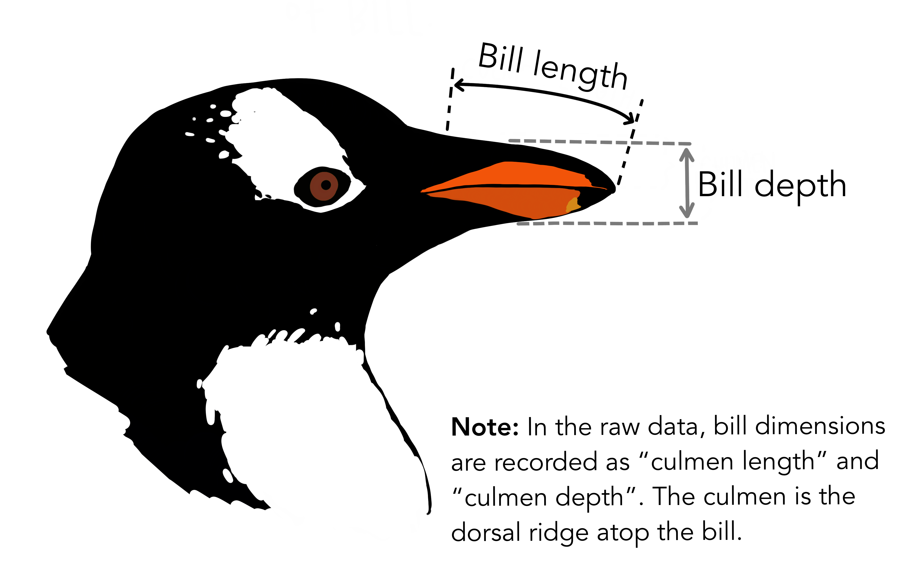

library(tidymodels)
library(broom)
library(performance)12 Regression in Tidymodels
This vignette is a gentle introduction into performing simple and multiple linear regression using tidymodels. Model fitting will be done using parsnip, which provides a unifying interface for model fitting and the resulting output. This means that parsnip provides a single interface with standardized argument names for each class of models so that you don’t have to directly deal with the different interfaces for different functions that aim to do the same thing (like linear regression). See here for a list of models that parsnip currently supports.
12.1 Libraries
12.2 Simple linear regression
The key steps to perform linear regression in tidymodels are to first specify the model type and then to specify the model form and the data to be used to construct it.
To illustrate, we shall look to penguins dataset from the tidymodels’ modeldata package. This dataset contains measurements for 344 penguins from three islands in Palmer Archipelago, Antarctica, and includes information on their species, island home, size (flipper length, body mass, bill dimensions), and sex.
# Let's inspect the data
head(penguins)#> # A tibble: 6 × 7
#> species island bill_length_mm bill_depth_mm flipper_length_mm
#> <fct> <fct> <dbl> <dbl> <int>
#> 1 Adelie Torgersen 39.1 18.7 181
#> 2 Adelie Torgersen 39.5 17.4 186
#> 3 Adelie Torgersen 40.3 18 195
#> 4 Adelie Torgersen NA NA NA
#> 5 Adelie Torgersen 36.7 19.3 193
#> 6 Adelie Torgersen 39.3 20.6 190
#> # ℹ 2 more variables: body_mass_g <int>, sex <fct>One thing you may have spotted is that there’s missing data in this dataset in the fourth row. For simplicity, we will only work with the complete cases. This reduces the number of rows in our dataset to 333.
penguins <- penguins %>%
filter(complete.cases(.))
head(penguins)#> # A tibble: 6 × 7
#> species island bill_length_mm bill_depth_mm flipper_length_mm
#> <fct> <fct> <dbl> <dbl> <int>
#> 1 Adelie Torgersen 39.1 18.7 181
#> 2 Adelie Torgersen 39.5 17.4 186
#> 3 Adelie Torgersen 40.3 18 195
#> 4 Adelie Torgersen 36.7 19.3 193
#> 5 Adelie Torgersen 39.3 20.6 190
#> 6 Adelie Torgersen 38.9 17.8 181
#> # ℹ 2 more variables: body_mass_g <int>, sex <fct>Much better! We will now build a simple linear regression model to model bill length as a function of bill depth.

In parsnip, the model specification is broken down into small functions such as set_mode() and set_engine() to make the interface more flexible and readable. The general structure is to first specify a mode (regression or classification) and then an engine to indicate what software (or implementation of the algorithm) will be used to fit the model. For our purposes, the mode is regression and the engine is lm for ordinary least squares. You may note that setting the mode is unnecessary for linear regression, but we include it here as it is a good practice.
lm_spec <- linear_reg() %>%
set_mode("regression") %>%
set_engine("lm")The above specification does not actually carry out the regression, rather it just states what we would like to do.
lm_spec#> Linear Regression Model Specification (regression)
#>
#> Computational engine: lmOnce we have such a blueprint, we may fit a model by inputting data and a formula. Recall that in R, a formula takes the form y ~ x where y ix the response and x is the predictor variable. For our example, where the response of bill length and predictor of bill depth, we would write the formula as bill_length_mm ~ bill_depth_mm.
Note
Unlike with standard R formula() objects, the names used this a formula must be identical to the variable names in the dataset. No processing functions are allowed (processing is handled by the recipe()).
lm_fit <- lm_spec %>%
fit(bill_length_mm ~ bill_depth_mm, data = penguins)
lm_fit#> parsnip model object
#>
#>
#> Call:
#> stats::lm(formula = bill_length_mm ~ bill_depth_mm, data = data)
#>
#> Coefficients:
#> (Intercept) bill_depth_mm
#> 54.8909 -0.6349The resulting parsnip object includes basic information about the fit such as the model coefficients. To access the underlying fit object, we could use the standard lm_fit$fit or with purrr’s pluck() function.
lm_fit %>%
pluck("fit")#>
#> Call:
#> stats::lm(formula = bill_length_mm ~ bill_depth_mm, data = data)
#>
#> Coefficients:
#> (Intercept) bill_depth_mm
#> 54.8909 -0.6349To get additional information about the fit (such as standard errors, and goodness-of-fit statistics), we can get a summary of the model fit as follows:
lm_fit %>%
pluck("fit") %>%
summary()#>
#> Call:
#> stats::lm(formula = bill_length_mm ~ bill_depth_mm, data = data)
#>
#> Residuals:
#> Min 1Q Median 3Q Max
#> -12.9498 -3.9530 -0.3657 3.7327 15.5025
#>
#> Coefficients:
#> Estimate Std. Error t value Pr(>|t|)
#> (Intercept) 54.8909 2.5673 21.380 < 2e-16 ***
#> bill_depth_mm -0.6349 0.1486 -4.273 2.53e-05 ***
#> ---
#> Signif. codes: 0 '***' 0.001 '**' 0.01 '*' 0.05 '.' 0.1 ' ' 1
#>
#> Residual standard error: 5.332 on 331 degrees of freedom
#> Multiple R-squared: 0.05227, Adjusted R-squared: 0.04941
#> F-statistic: 18.26 on 1 and 331 DF, p-value: 2.528e-05To get a tidy summary of the model parameter estimates, simply use the tidy function from the broom package on the model fit. To extract model statistics, glance() can be used.
tidy(lm_fit)#> # A tibble: 2 × 5
#> term estimate std.error statistic p.value
#> <chr> <dbl> <dbl> <dbl> <dbl>
#> 1 (Intercept) 54.9 2.57 21.4 2.54e-64
#> 2 bill_depth_mm -0.635 0.149 -4.27 2.53e- 5glance(lm_fit)#> # A tibble: 1 × 12
#> r.squared adj.r.squared sigma statistic p.value df logLik AIC BIC
#> <dbl> <dbl> <dbl> <dbl> <dbl> <dbl> <dbl> <dbl> <dbl>
#> 1 0.0523 0.0494 5.33 18.3 0.0000253 1 -1029. 2064. 2075.
#> # ℹ 3 more variables: deviance <dbl>, df.residual <int>, nobs <int>Now, to make predictions, we simply use predict() on the parnsip model object. In there, we must specify the dataset we want to predict on in the new_data argument. Note that this may be a different dataset than we used for fitting the model, but this input data must include all predictor variables that were used to fit the model.
predict(lm_fit, new_data = penguins)#> # A tibble: 333 × 1
#> .pred
#> <dbl>
#> 1 43.0
#> 2 43.8
#> 3 43.5
#> 4 42.6
#> 5 41.8
#> 6 43.6
#> # ℹ 327 more rowsFor parnsip models, the predictions are always outputted in a tibble.
To specify the type of prediction made, modify type argument. If we set type = "conf_int", we get a 95% confidence interval.
predict(lm_fit, new_data = penguins, type = "conf_int")#> # A tibble: 333 × 2
#> .pred_lower .pred_upper
#> <dbl> <dbl>
#> 1 42.3 43.7
#> 2 43.3 44.4
#> 3 42.8 44.1
#> 4 41.8 43.5
#> 5 40.7 43.0
#> 6 43.0 44.2
#> # ℹ 327 more rowsTo evaluate model predictive performance, it is logical to compare the each of the observed and predicted values. To see these values side-by-side we simply bind the two vectors of interest.
bind_cols(
predict(lm_fit, new_data = penguins),
penguins
) %>%
select(bill_length_mm, .pred)#> # A tibble: 333 × 2
#> bill_length_mm .pred
#> <dbl> <dbl>
#> 1 39.1 43.0
#> 2 39.5 43.8
#> 3 40.3 43.5
#> 4 36.7 42.6
#> 5 39.3 41.8
#> 6 38.9 43.6
#> # ℹ 327 more rowsA simpler way to do this is to use the nifty augment() function.
augment(lm_fit, new_data = penguins) %>%
select(bill_length_mm, .pred)#> # A tibble: 333 × 2
#> bill_length_mm .pred
#> <dbl> <dbl>
#> 1 39.1 43.0
#> 2 39.5 43.8
#> 3 40.3 43.5
#> 4 36.7 42.6
#> 5 39.3 41.8
#> 6 38.9 43.6
#> # ℹ 327 more rows12.3 Multiple linear regression
The only difference about fitting a multiple linear regression model in comparison to a simple linear regression model lies the formula. For multiple linear regression, the predictors are specified in the formula expression, separated by +. For example, if we have a response variable y and three predictors, x1, x2, and x3, we would write the formula as, y ~ x1 + x2 + x3.
lm_fit2 <- lm_spec %>% fit(
formula = bill_length_mm ~ bill_depth_mm + flipper_length_mm + body_mass_g,
data = penguins
)
lm_fit2#> parsnip model object
#>
#>
#> Call:
#> stats::lm(formula = bill_length_mm ~ bill_depth_mm + flipper_length_mm +
#> body_mass_g, data = data)
#>
#> Coefficients:
#> (Intercept) bill_depth_mm flipper_length_mm body_mass_g
#> -2.571e+01 6.131e-01 2.872e-01 3.472e-04Everything else proceeds much the same as before. Such as obtaining parameter estimates
tidy(lm_fit2)#> # A tibble: 4 × 5
#> term estimate std.error statistic p.value
#> <chr> <dbl> <dbl> <dbl> <dbl>
#> 1 (Intercept) -25.7 6.72 -3.83 1.55e- 4
#> 2 bill_depth_mm 0.613 0.138 4.43 1.26e- 5
#> 3 flipper_length_mm 0.287 0.0351 8.18 6.28e-15
#> 4 body_mass_g 0.000347 0.000566 0.614 5.40e- 1as well as predicting new values.
predict(lm_fit2, new_data = penguins)#> # A tibble: 333 × 1
#> .pred
#> <dbl>
#> 1 39.0
#> 2 39.7
#> 3 42.5
#> 4 42.8
#> 5 42.8
#> 6 38.4
#> # ℹ 327 more rowsIf you would like to use all variables aside from your response as predictors, a shortcut is to use the formula form y ~ .
lm_fit3 <- lm_spec %>% fit(bill_length_mm ~ ., data = penguins)
lm_fit3#> parsnip model object
#>
#>
#> Call:
#> stats::lm(formula = bill_length_mm ~ ., data = data)
#>
#> Coefficients:
#> (Intercept) speciesChinstrap speciesGentoo islandDream
#> 15.343291 9.835502 6.117675 -0.503815
#> islandTorgersen bill_depth_mm flipper_length_mm body_mass_g
#> -0.127431 0.300670 0.069257 0.001081
#> sexmale
#> 2.04785912.4 Checking model assumptions
After fitting a model, it is good to check whether the assumptions of linear regression are met. For this, we will use the performance package, in particular the check_model() function to produce several helpful plots we may use to check the assumptions for our first multiple linear regression model.
lm_fit2 %>%
extract_fit_engine() %>%
check_model()Notice that on each plot it says what we should expect to see if the model assumption is met.
We shall now briefly walk you through what each plot means.
The first two plots help us to examine the linearity of the errors versus the fitted values. Ideally, we want this error to be relatively flat and horizontal. The third plot is for checking homogeneity of the variance, where we want the points to be roughly the same distance from the line as this indicates similar dispersion. The fourth plot helps us to see if there are high leverage points - points that have command or influence over the model fit. As a result, these can have a great effect on the model predictions. So the removal of such points or modifications to the model may be necessary to deal with them. The fifth plot helps us to discern collinearity, which is when predictors are highly correlated. Since independent variables should be independent, this can throw off simple regression models (in standard error of coefficient estimates and the estimates themselves, which would likely be sensitive to changes in the predictors that are included in the model). The last plot enables us to check the normality of residuals. If the distribution of the model error is non-normal, then that suggests a linear model may not be appropriate. For a QQ plot, we want the points to fall along a straight diagonal line.
For our example, we observe that there’s a pretty high correlation between body_mass_g and flipper_length_mm (not quite in the red-zone of 10 and above, but close enough for concern). That is indicative of multicollinearity between them. Intuitively, it makes sense for the body mass and flipper length variables - we’d expect that as once increases, so should the other.
We can take a closer look at the correlation by whipping up a correlation matrix by using base R’s cor() function. Since for collinearity we’re only usually interested in the numerical predictors, we’ll only include the four numeric variables.
penguins_corr <- penguins %>%
select(body_mass_g, ends_with("_mm")) %>%
cor()
penguins_corr#> body_mass_g bill_length_mm bill_depth_mm flipper_length_mm
#> body_mass_g 1.0000000 0.5894511 -0.4720157 0.8729789
#> bill_length_mm 0.5894511 1.0000000 -0.2286256 0.6530956
#> bill_depth_mm -0.4720157 -0.2286256 1.0000000 -0.5777917
#> flipper_length_mm 0.8729789 0.6530956 -0.5777917 1.0000000Indeed body_mass_g and flipper_length_mm are highly positively correlated. To deal with this problem, we’ll re-fit the model without body_mass_g.
lm_fit3 <- lm_spec %>% fit(
formula = bill_length_mm ~ bill_depth_mm + flipper_length_mm,
data = penguins
)
lm_fit3#> parsnip model object
#>
#>
#> Call:
#> stats::lm(formula = bill_length_mm ~ bill_depth_mm + flipper_length_mm,
#> data = data)
#>
#> Coefficients:
#> (Intercept) bill_depth_mm flipper_length_mm
#> -27.9762 0.6200 0.3052and then check again to see whether the assumptions are met.
lm_fit3 %>%
extract_fit_engine() %>%
check_model()Overall, the plots look pretty good. For details on how to interpret each of these plots and more details about model assumptions please see here and here.
12.5 Interaction terms
In general, the syntax to add an interaction term to a formula is as follows:
x:ydenotes an interaction term betweenxandy.x*ydenotes the interaction betweenxandyas well asxandy; that is,x + y + x*y.
It is important to note that this syntax is not compatible with all engines. Thus, we shall explain how to bypass this issue by adding an interaction term in a recipe later on. For now, let’s start simple by adding an interaction term between species and bill_length_mm, which allows for a species-specific slope.
lm_fit4 <- lm_spec %>% fit(
formula = bill_length_mm ~ species * bill_depth_mm,
data = penguins
)
lm_fit4#> parsnip model object
#>
#>
#> Call:
#> stats::lm(formula = bill_length_mm ~ species * bill_depth_mm,
#> data = data)
#>
#> Coefficients:
#> (Intercept) speciesChinstrap
#> 23.3668 -9.9389
#> speciesGentoo bill_depth_mm
#> -6.6966 0.8425
#> speciesChinstrap:bill_depth_mm speciesGentoo:bill_depth_mm
#> 1.0796 1.2178Using recipes, the interaction term is specified by using step_interact(). Then we construct a workflow object, where we add the linear regression model specification and recipe. Finally, we fit the model as we did for a parsnip model. Note that the workflow object does not need the variables that were specified in the recipe to be specified again.
rec_spec_interact <- recipe(
formula = bill_length_mm ~ species + bill_depth_mm,
data = penguins
) %>%
step_interact(~ species:bill_depth_mm)
lm_wf_interact <- workflow() %>%
add_model(lm_spec) %>%
add_recipe(rec_spec_interact)
lm_wf_interact %>% fit(penguins)#> ══ Workflow [trained] ═══════════════════════════════════════════════════════
#> Preprocessor: Recipe
#> Model: linear_reg()
#>
#> ── Preprocessor ─────────────────────────────────────────────────────────────
#> 1 Recipe Step
#>
#> • step_interact()
#>
#> ── Model ────────────────────────────────────────────────────────────────────
#>
#> Call:
#> stats::lm(formula = ..y ~ ., data = data)
#>
#> Coefficients:
#> (Intercept) speciesChinstrap
#> 23.3668 -9.9389
#> speciesGentoo bill_depth_mm
#> -6.6966 0.8425
#> speciesChinstrap_x_bill_depth_mm speciesGentoo_x_bill_depth_mm
#> 1.0796 1.2178Notice the variable name for the interaction term is not the same as it is in base R (which is simply of the form x:y). In step_interact(), the default separator between the variable names is _x_. You can change this default by specifying the sep argument in the function.
To read more about formula syntax, see ?formula.
12.6 Non-linear transformations of the predictors
Similar to how we were able to add an interaction term using recipes, we can also perform a transformation as a pre-processing step. The function used for this is step_mutate() (which acts like dplyr’s mutate).
Note that, in general, if you are specifying a recipe aim to keep as much of the pre-processing in your recipe specification as possible. This helps to ensure that the transformation will be applied to new data consistently.
rec_spec_pow2 <- recipe(bill_length_mm ~ bill_depth_mm, data = penguins) %>%
step_mutate(bill_depth_mm2 = bill_depth_mm^2)
lm_wf_pow2 <- workflow() %>%
add_model(lm_spec) %>%
add_recipe(rec_spec_pow2)
lm_wf_pow2 %>% fit(penguins)#> ══ Workflow [trained] ═══════════════════════════════════════════════════════
#> Preprocessor: Recipe
#> Model: linear_reg()
#>
#> ── Preprocessor ─────────────────────────────────────────────────────────────
#> 1 Recipe Step
#>
#> • step_mutate()
#>
#> ── Model ────────────────────────────────────────────────────────────────────
#>
#> Call:
#> stats::lm(formula = ..y ~ ., data = data)
#>
#> Coefficients:
#> (Intercept) bill_depth_mm bill_depth_mm2
#> 95.2558 -5.4431 0.1413There are many transformations already built into recipes such as step_log(). So, for basic transformations, there’s often no need to make your own transformation from scratch. See here for a comprehensive list of the transformations that are offered in recipes.
rec_spec_log <- recipe(bill_length_mm ~ bill_depth_mm, data = penguins) %>%
step_log(bill_depth_mm) # transforms the var in-place, keeps it's name
lm_wf_log <- workflow() %>%
add_model(lm_spec) %>%
add_recipe(rec_spec_log)
lm_wf_log %>% fit(penguins)#> ══ Workflow [trained] ═══════════════════════════════════════════════════════
#> Preprocessor: Recipe
#> Model: linear_reg()
#>
#> ── Preprocessor ─────────────────────────────────────────────────────────────
#> 1 Recipe Step
#>
#> • step_log()
#>
#> ── Model ────────────────────────────────────────────────────────────────────
#>
#> Call:
#> stats::lm(formula = ..y ~ ., data = data)
#>
#> Coefficients:
#> (Intercept) bill_depth_mm
#> 74.95 -10.91
🐧 🐧 🐧 🐧 🐧 🐧 🐧 🐧 🐧 🐧 🐧 🐧 🐧 🐧 🐧 🐧 🐧 🐧 🐧 🐧 🐧 🐧 🐧 🐧 🐧 🐧
12.7 Attribution
This Chapter was largely adapted from Chapter 3 of ISLR tidymodels labs. Checking linear regression assumptions using the performance package is based on this article and this blog post on investigating model performance. The artwork used is by Allison Horst.Allison Horst.
🐧 🐧 🐧 🐧 🐧 🐧 🐧 🐧 🐧 🐧 🐧 🐧 🐧 🐧 🐧 🐧 🐧 🐧 🐧 🐧 🐧 🐧 🐧 🐧 🐧 🐧